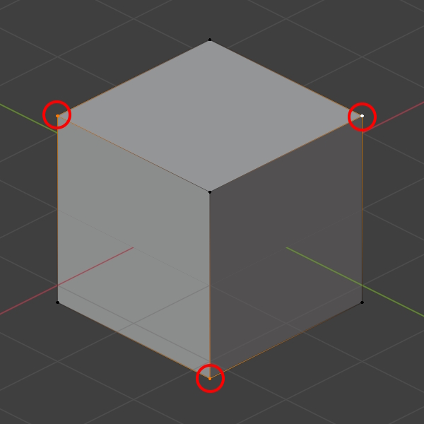
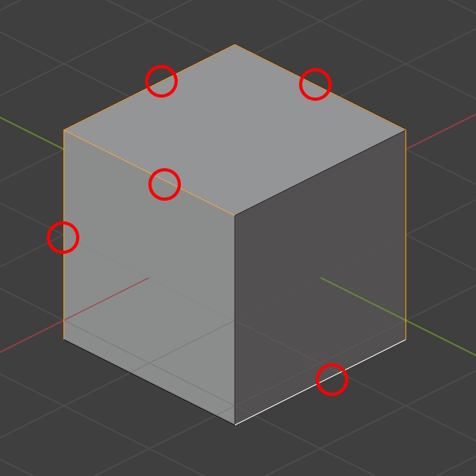
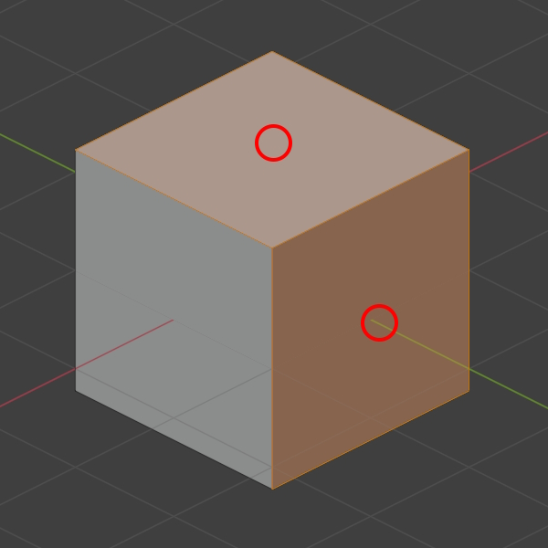
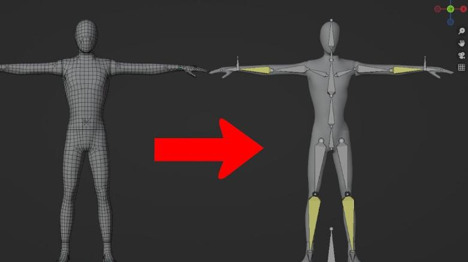

Tema 4: Linea de tiempo y animación 3D
La animación 3D es el arte de darle
movimiento a modelos tridimensionales. Esto
puede ir desde una simple rotación hasta una
escena completa de un personaje corriendo,
hablando o expresando emociones.
Para controlar ese movimiento, se utilizan dos
herramientas esenciales: la línea de
tiempo y los
keyframes.
Línea de Tiempo (Timeline):
- La línea de tiempo es donde se organiza todo lo
que ocurre en una animación, segundo a segundo o
cuadro a cuadro. Es como una regla dividida en
pequeños bloques (llamados fotogramas), y cada
uno representa una fracción de segundo.

- En un video típico, hay 24 o 30 fotogramas por segundo (fps).
- Si querés animar algo que dura 2 segundos a 30 fps, vas a tener 60 fotogramas en la línea de tiempo.
Desde allí se controlan cuándo ocurren los movimientos, cuánto duran y cómo se relacionan entre sí.
- 🟡 Aristas: Son las líneas que
conectan dos vértices. Ayudan a definir la
estructura del modelo, especialmente en modelos
de tipo low poly o de geometría clara

- 🔺 Caras: Se forman cuando tres
o más vértices se conectan para crear una
superficie. Lo más común es usar triángulos o
cuadriláteros, ya que los motores gráficos
procesan mejor estas formas.

Partes Fundamentales de un Modelo 3D
La Malla (Mesh)
Es la representación visual del modelo. Puede suavizarse o subdividirse según el estilo del proyecto. Pero no puede moverse por sí sola.
🦴 El Esqueleto (Rig)
Es el sistema de huesos internos que le da movilidad a la malla. Se organiza en jerarquías padre-hijo para permitir animaciones fluidas como caminar o correr.

El hueso principal (root) transmite
movimiento a los
demás. Esto permite controlar brazos, piernas o
expresiones faciales fácilmente.

🎨 Pintado de Pesos (Weight Painting)
Permite definir qué partes de la malla son afectadas por cada hueso del esqueleto.
Se representa con colores:
- 🔴 Rojo: Máxima influencia
- 🔵 Azul: Mínima influencia
Una correcta distribución de pesos evita errores visuales como estiramientos o torsiones poco naturales.